Rapid Verification of NICE/VNICE Instruction Acceleration with Nuclei Model and NICE Wizard¶
Nuclei Model is available for both Windows and Linux. All tests in this document were performed on the Windows version of Nuclei Studio (>= 2025.10).
Background¶
xlmodel_nice¶
Nuclei Model continuously updates the xlmodel_nice software package, which allows users to customize their own NICE/VNICE implementations. Users implement the specific instruction behavior in xlmodel_nice/nice/src/nice.cc and build a new Nuclei Model that applications can be configured to call.
Nuclei NICE Wizard¶
Nuclei NICE Wizard is a NICE/VNICE instruction generation tool provided in Nuclei Studio. After configuring custom instructions, the user can automatically generate two files:
insn.h: the instruction inline assembly header file. The user needs to add the instruction inline assembly from this file into the application header file.nice.cc: the instruction implementation file. The user needs to add the instruction decode framework from this file intoxlmodel_nice/nice/src/nice.cc.
test code¶
In batch matrix operations common in AI and deep learning, there are scenarios where small matrix blocks need to be processed repeatedly. In this test, an algorithm function that performs multiplication and accumulation on multiple scalar 4x4 matrices is used as the golden_case. Then NICE Wizard is used to generate NICE/VNICE acceleration instructions, which are added to the test application and the xlmodel_nice software package project respectively and recompiled. Finally, Nuclei Model is run to observe the instruction count and cycle count of the optimized algorithm function, so as to evaluate the NICE/VNICE acceleration effect.
Solution¶
Environment Preparation¶
The NICE Wizard related features integrated in Nuclei Studio IDE must be used together with the Nuclei CPU Model - NICE Support (xlmodel_nice) software package.
Nuclei Studio:
xlmodel_nice:
Running the Original Program on Nuclei Model¶
Step 1: Import the original Nuclei SDK project
Download link for the project before optimization
After downloading the zip package, you can import it directly into Nuclei Studio and run it (import steps: File->Import->Existing Projects into Workspace->Select archive file->select the zip archive->Finish).
Step 2: Build the original Nuclei SDK project
Build the original project, and make sure the build succeeds and the generated elf file can be found under Debug:
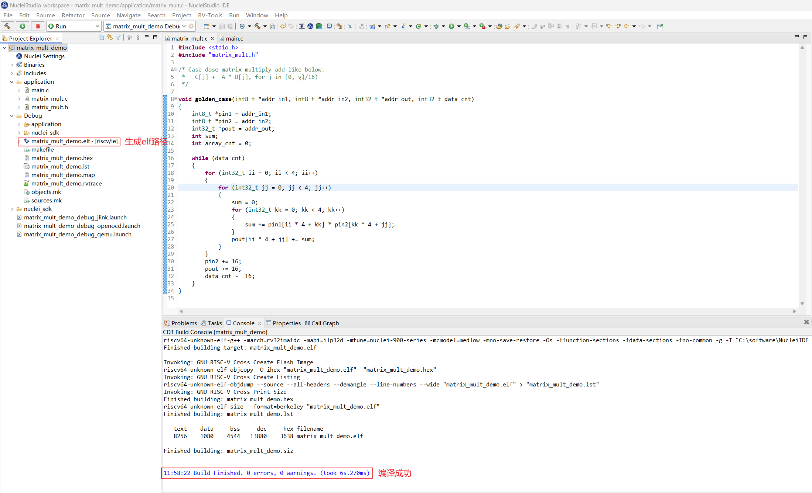
Step 3: Run the original Nuclei SDK project
Before running the program on Nuclei Model, you first need to confirm the Core configuration and the Other extensions configuration in the project's Nuclei Settings, as these configurations need to be passed to the Model. The Core currently used is n900fd, and Other extensions is not configured.
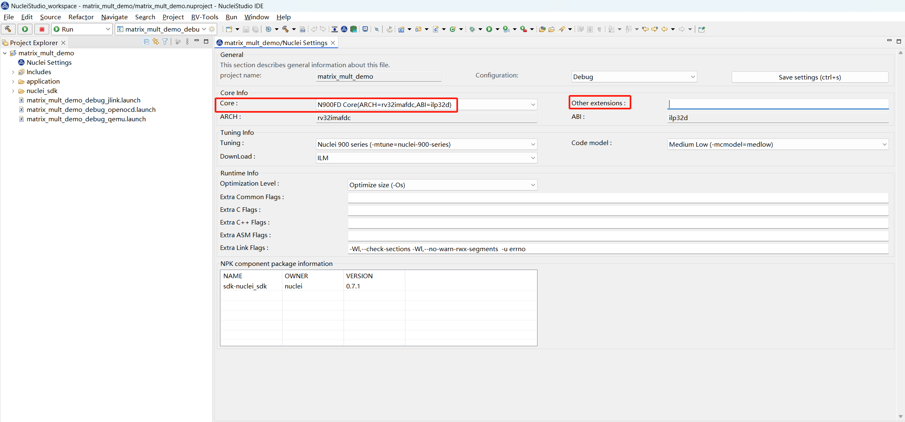
Model simulation requires configuring the GDB Nuclei Model riscv Debugging configuration in Nuclei Studio. The steps are as follows:
- Open
Run Configurationsfrom theRunoption in the Nuclei Studio main menu bar. - Select the
GDB Nuclei Model riscv Debuggingconfiguration, right-click and chooseNew Configuration. A Model configuration page named after the project will be automatically generated, and the launch bar will be updated accordingly. - In the
Maintab on the right, clickSearch Project...and select the built elf file. - In the
Debuggertab on the right, selectBrowseand locate the default path of the Nuclei Model executable:NucleiStudio/toolchain/nucleimodel/bin/xl_cpumodel.exe. -
In the
Nuclei Setupsection of theDebuggertab on the right, complete the model run configuration. The selectedNuclei RISC-V CoreandOther Extensionsmust be consistent with theCoreandOther extensionsconfigured inNuclei Settings. WhenOther Extensionsis empty, this parameter is not passed.Enable Nuclei Model RVTracemeans that rvtrace is generated at runtime. Then clickApplyandRun, and the model starts running the program.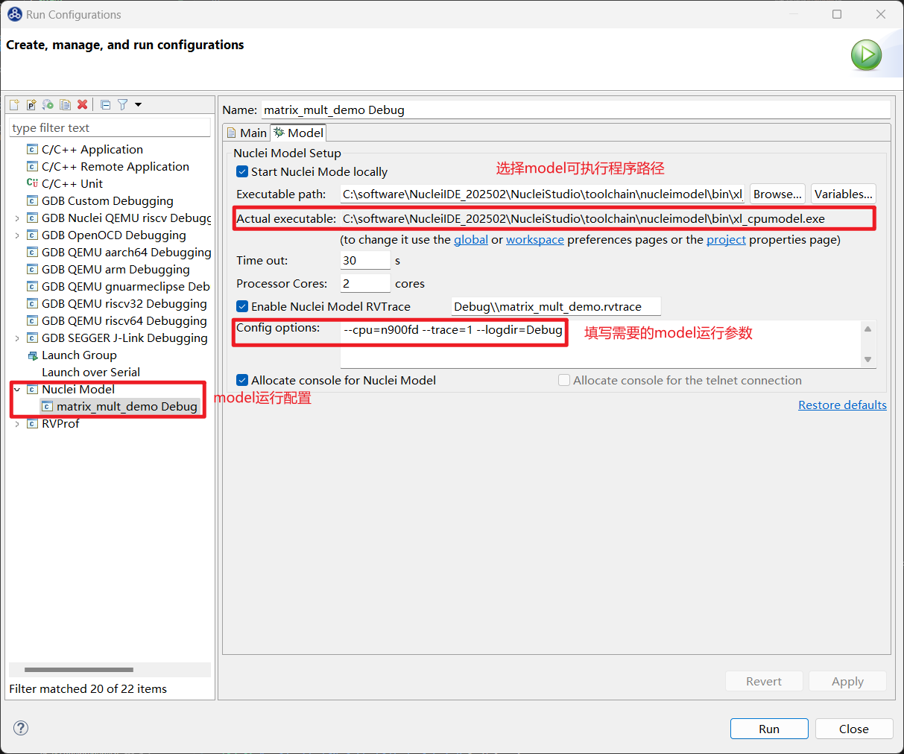
Nuclei Studio (< 2025.10) can only use
Nuclei ModelinRun Configurationsto configure the model. For Nuclei Studio (>= 2025.10), it is recommended to switch toGDB Nuclei Model riscv Debugging.
When Total elapsed real time appears in the Console, it means the model has finished the simulation. The program extracts the instruction count and cycle count of the scalar matrix multiplication algorithm function golden_case as follows:
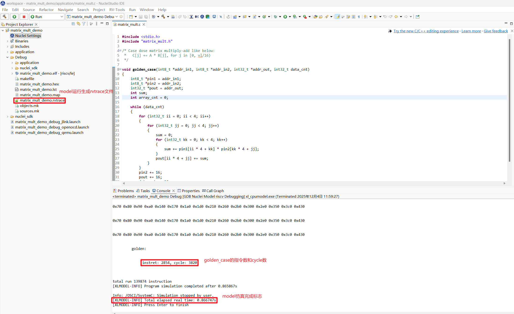
NICE Instruction Replacement¶
Step 1: Build the xlmodel_nice package
After downloading and unzipping the xlmodel_nice zip package, you can import it directly into Nuclei Studio and run it (import steps: File->Import->Projects from Folder or Archive->Next->Directory->select the xlmodel_nice folder->Finish).
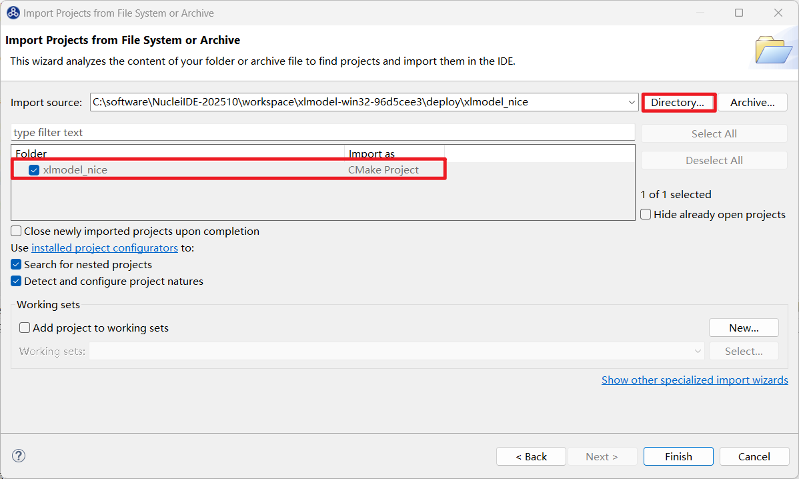
Before building xlmodel_nice, you need to configure the xlmodel build environment first (xlmodel_nice build environment configuration). Then build to make sure the original package can be successfully compiled to generate the model executable:
For Nuclei Studio (< 2025.10), the generated elf file is located at
build/default/xl_cpumodel.
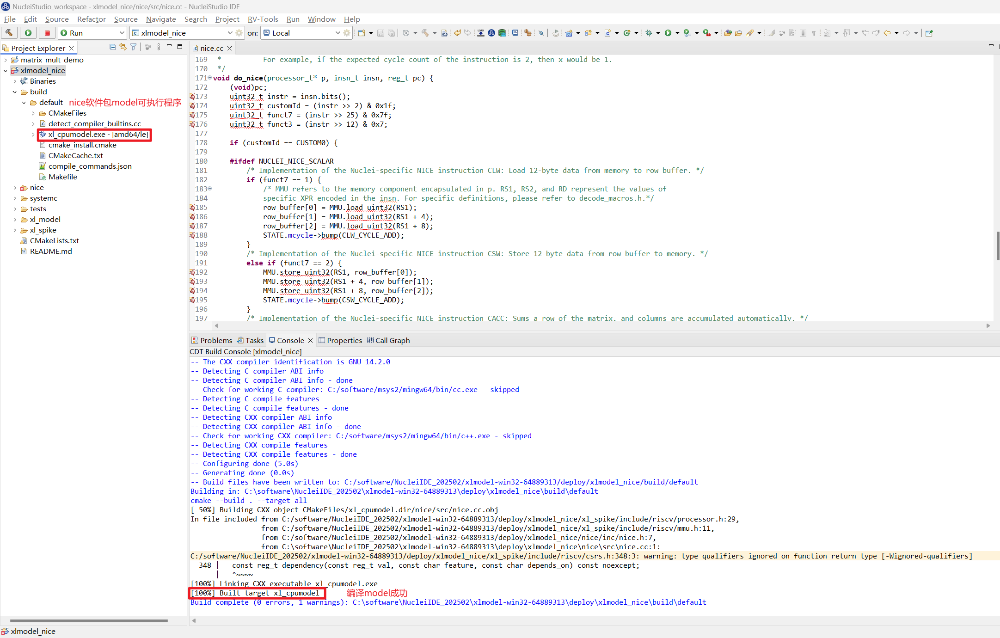
Step 2: Use NICE Wizard to generate NICE instruction replacement
Hotspot functions of the application can be located with Nuclei Model Profiling first. For details, refer to Demonstrate NICE/VNICE Instruction Acceleration of Nuclei Model Through Profiling, which will not be repeated here.
The hotspot function in this use case is known to be matrix multiply-accumulate. The computation of one row of matrix A * one column of matrix B is as follows:
for (int32_t kk = 0; kk < 4; kk++)
{
sum += pin1[ii * 4 + kk] * pin2[kk * 4 + jj];
}
This algorithm can be completely replaced by a single NICE instruction, with the sum value, the pin1 address, and the pin2 address as inputs, and the sum as the output.
Next, use NICE Wizard to generate the envisioned NICE instruction. The user can create a file named aicc.nice in the root directory of the xlmodel_nice project in Nuclei Studio. Once this file is created, the NICE Wizard instruction generation window will pop up. The steps to configure and generate the NICE instruction are as follows:
- Select
Addto add aNICEinstruction. The instruction format is shown inNICE instruction formatin the upper-left corner. First, fill in theInstruction namefield withmatrix_row_col_multiply_asmto indicate a matrix row-column multiply-accumulate operation. - Fill in
opcode,funct3, andfunct7in sequence. -
paramsconfigures the return value and input parameters of the instruction inline assembly. The envisionedNICEinstruction returns anint32_tand has 3 input parameters:int32_t t,int8_t* a, andint8_t* b. Set them respectively inparams.Note: In the
Edit Typesettings interface for the input parameters, the parameters are configured in the order a->b->t: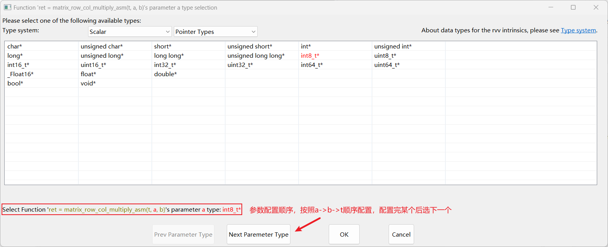
-
Preview in
Function full previewwhether the instruction inline assembly format is correct. After confirming there are no issues, clicksave. Once saved, the generated custom instruction can be seen in the instruction panel on the left. -
Click
Save and Generate Fileat the bottom.insn.handnice.ccwill be generated in the same path asaicc.nice.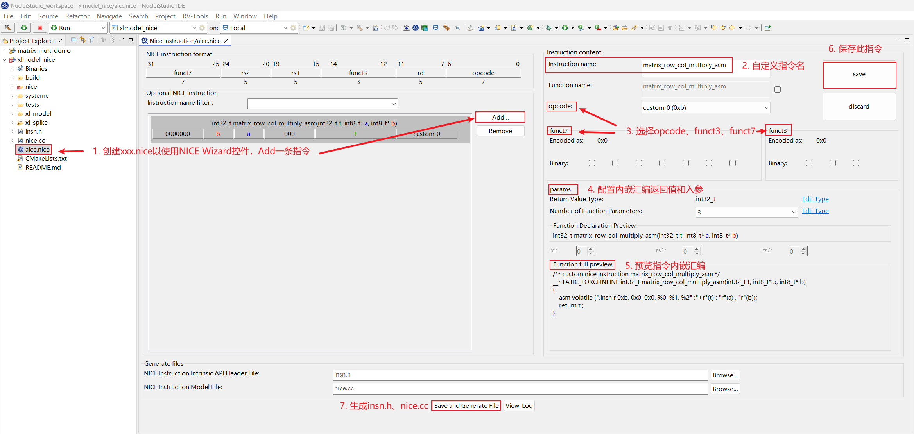
-
Copy the
NICEinstruction inline assembly from the generatedinsn.hinto the application header file, and replacexlmodel_nice/nice/src/nice.ccdirectly with the generatednice.cc.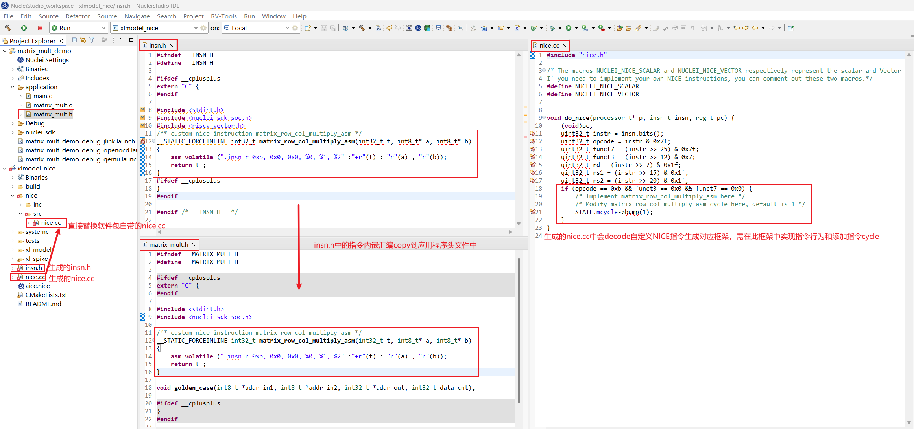
Alternatively,
insn.hcan be generated directly into the application project path for reference, which saves the manual copying of file contents each time.
Step 3: Implement the NICE instruction in xlmodel_nice
Open the xlmodel_nice/nice/src/nice.cc file and use the macros defined in spike to implement the NICE instruction: the MMU macro represents memory access; use MMU.load_xxx<n> for load memory and MMU.store_xxx<n> for store memory; the RD, RS1, RS2, and RS3 macros represent the values in their corresponding scalar registers; use WRITE_RD to write the destination register. The usage of these macros can be found in nice/inc/decode_macros.h.
After implementing the instruction, directly specify the number of additional cycles n required by the custom instruction: STATE.mcycle->bump(n);. Here, this NICE instruction is specified to require 1 additional cycle. Since an instruction takes 1 cycle by default, this NICE instruction consumes 2 cycles in total.
The implemented NICE instruction and its cycle specification are as follows:
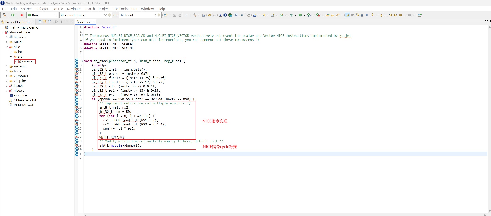
Rebuild xlmodel_nice and make sure the build passes.
Step 4: Rerun the program on Nuclei Model
First, write an algorithm function nice_case with NICE instruction inline assembly for comparison with golden_case, add a comparison of the function output results, and then rebuild the application project:
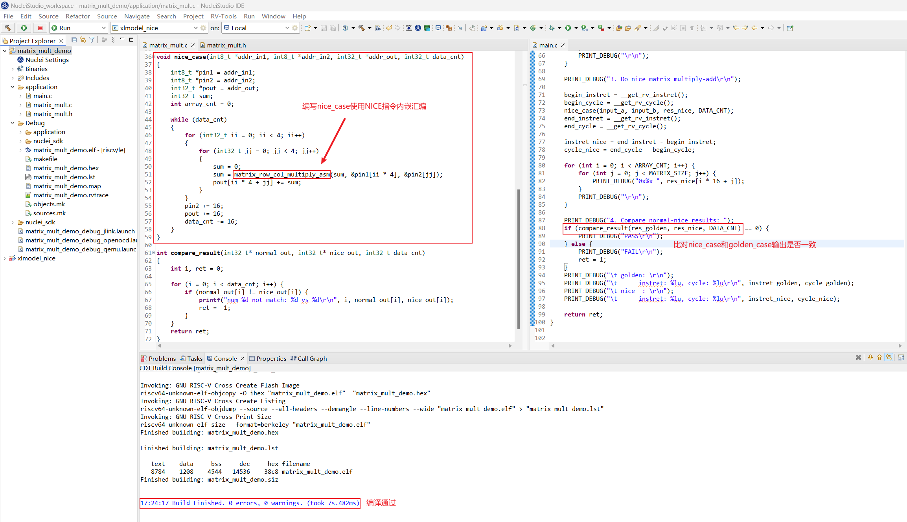
Since the model has been rebuilt with xlmodel_nice into a new executable, you need to reconfigure the model executable path in the Nuclei Studio Nuclei Model configuration to xlmodel_nice/build/default/xl_cpumodel.exe. The rest of the configuration remains unchanged:
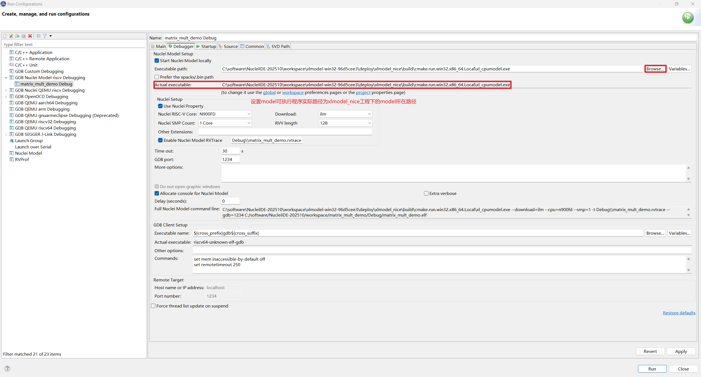
After Apply, Run the application again. You can find that the output results of nice_case and golden_case are identical, while the instruction count and cycle count of nice_case have dropped significantly. The envisioned NICE instruction is implemented correctly and has optimized the original scalar algorithm.
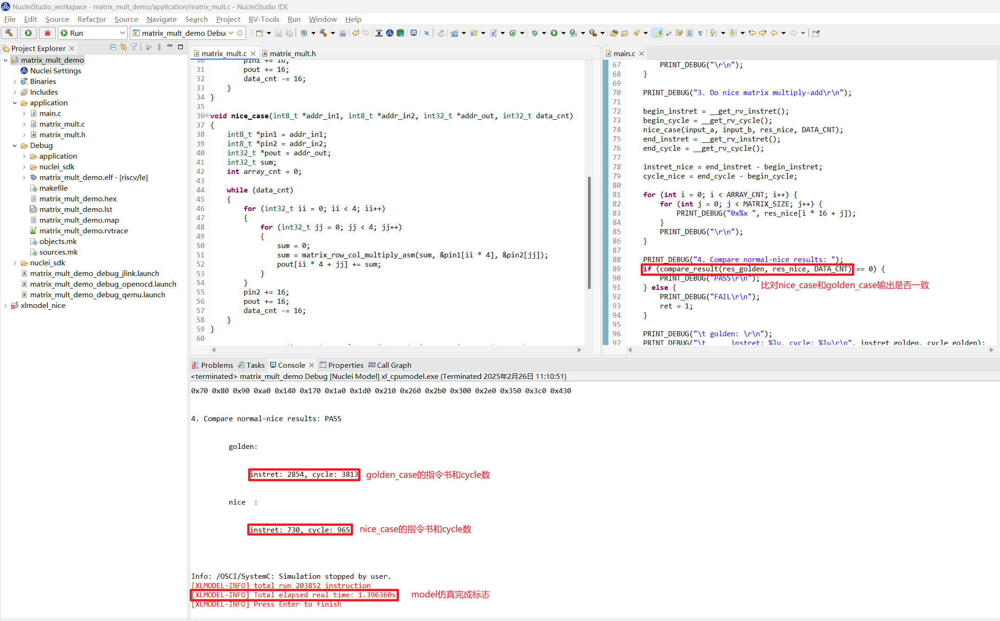
VNICE Instruction Replacement¶
Step 1: Use NICE Wizard to generate VNICE instruction replacement
When computing with a NICE instruction, only one element of the output matrix is obtained each time, which is not efficient enough. If one instruction operation could process multiple matrix elements in parallel, the efficiency should be further improved. It is natural to think of using Vector instructions to process matrix data with higher parallelism.
The idea is to condense the complete 4 * 4 matrix multiply-accumulate operation into a single Vector instruction. A VNICE instruction can be used to implement this behavior, with three 4 * 4 input matrices as inputs and a 4 * 4 output matrix as the return value.
Double-click aicc.nice to use NICE Wizard again to configure the envisioned instruction. The steps to generate the instruction are similar to those for generating the NICE instruction above. The differences are: configure the Instruction name field as matrix_multiply_4x4_asm to indicate the multiplication of two 4*4 matrices; configure funct3 as 1 to avoid the same encoding as the previous NICE instruction; and to match the vector data type inputs and outputs corresponding to the scalar golden_case, set the return value to vin32m8_t, the number of input parameters to 3, namely vin32m8_t, vint8m1_t, and vint8m2_t. The configuration interface after clicking save is as follows:
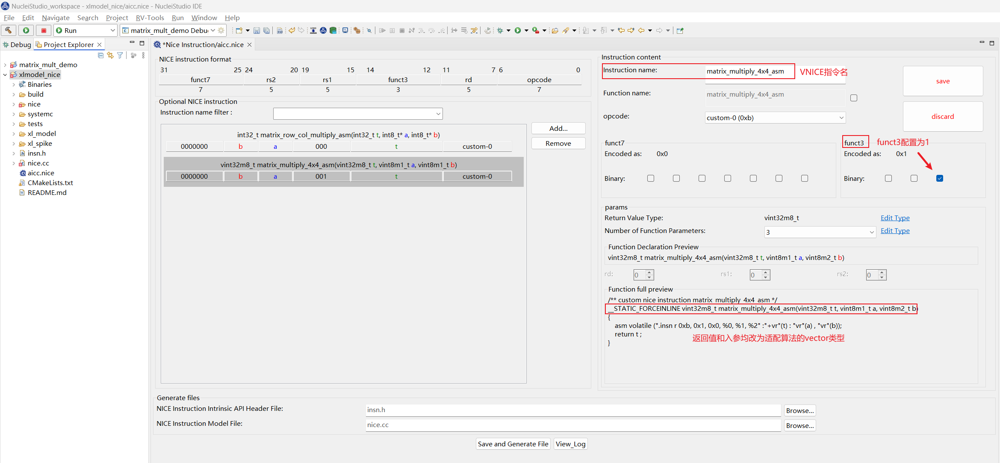
Click Save and Generate File at the bottom to overwrite the previously generated insn.h and nice.cc. At this point, insn.h.bak and nice.cc.bak will also appear in the same path. These two files are backups of the previously saved insn.h and nice.cc and will not be used. Again, copy the NICE instruction inline assembly from the generated insn.h into the application header file, and copy the new instruction decode framework from the generated nice.cc into xlmodel_nice/nice/src/nice.cc:
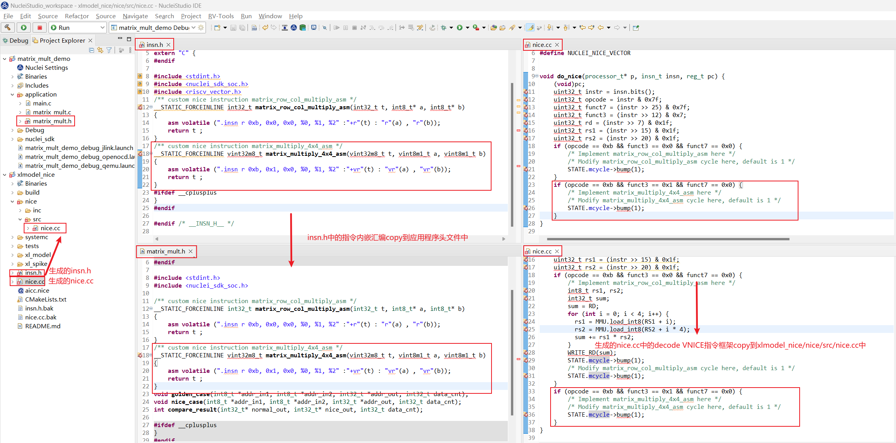
Step 2: Implement the VNICE instruction in xlmodel_nice
Implement the VNICE instruction in xlmodel_nice/nice/src/nice.cc: V_MATRIX_ST stores the vector registers input to the instruction into a custom buffer, V_MATRIX_LD loads the instruction output results into the RD register, and V_MATRIX_CALC implements the two-matrix multiply-accumulate operation. The VNICE instruction implementation can refer to the vector instruction implementation in spike: xlmodel_nice/xl_spike/include/riscv/v_ext_macros.h.
Specify that this VNICE instruction requires 2 cycles, i.e., it actually consumes 3 cycles. The implemented VNICE instruction and its cycle specification are as follows:
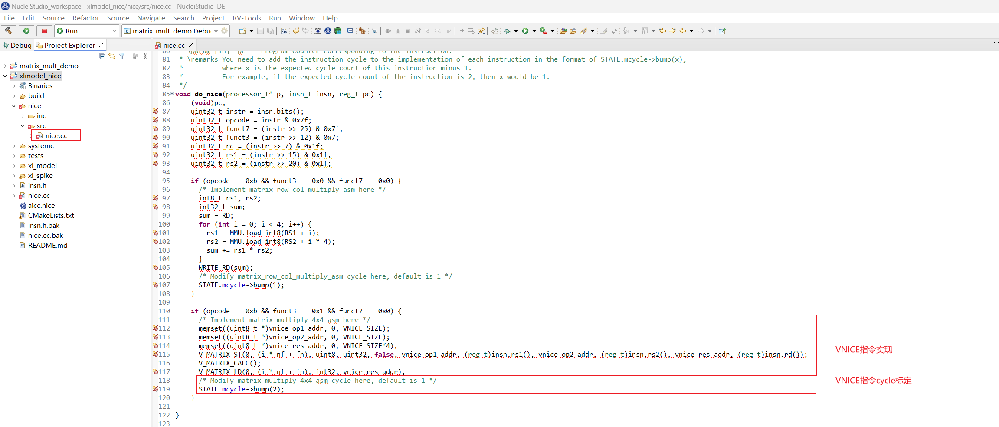
Rebuild xlmodel_nice again and make sure the build passes.
Step 3: Rerun the program on Nuclei Model
Since the inputs and outputs of the VNICE instruction are all vector registers, you need to configure the application's Nuclei Settings to enable the vector extension of the corresponding ARCH. Here, the _zve32f extension is added for rv32imafdc:
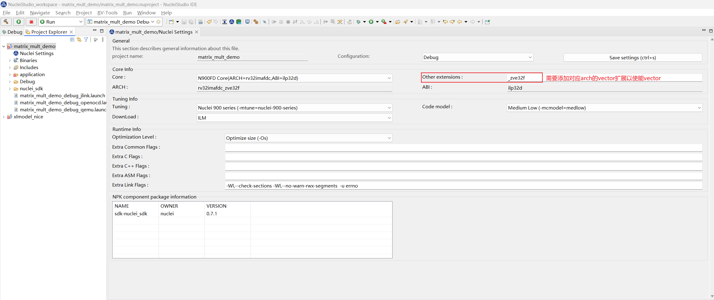
The corresponding Nuclei Model configuration also needs to add --ext=_zve32f to enable the model's vector functionality, then click Apply:
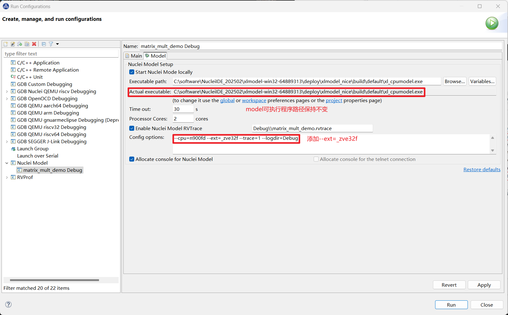
You need to write an algorithm function vnice_case with VNICE instruction inline assembly. The inputs and outputs required by the VNICE inline assembly need to be constructed with the corresponding vector intrinsic API. Then add a result comparison with golden_case and rebuild the application project.
Note: You need to add #include <riscv_vector.h> to the application header file to enable the vector intrinsic API.
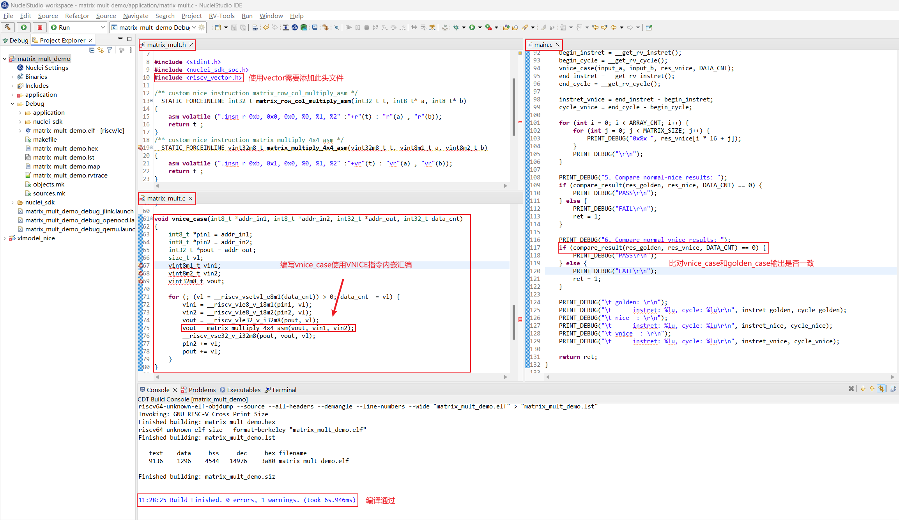
Run the application again. You can find that the output results of vnice_case and golden_case are identical, and its instruction count and cycle count have dropped further significantly compared to nice_case. The envisioned VNICE instruction is implemented correctly and has accelerated the matrix multiply-accumulate algorithm by taking advantage of the high parallelism of vector.
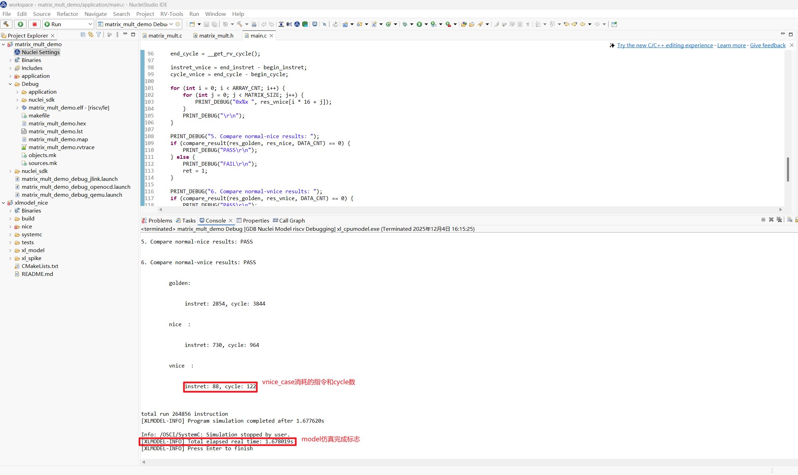
Summary¶
The table below shows the instret/cycle statistics after implementing the NICE/VNICE instructions to optimize the algorithm. Compared with golden_case, the performance of nice_case after optimization is improved by about 4 times, and the performance of vnice_case after optimization is improved by more than 30 times.
| instret/cycle | golden_case | nice_case | vnice_case | golden / nice | golden / vnice | nice / vnice |
|---|---|---|---|---|---|---|
| instret | 2854 | 730 | 88 | 3.91 | 32.43 | 8.30 |
| cycle | 3844 | 964 | 122 | 3.99 | 31.51 | 7.90 |
By studying the optimization strategy of an existing algorithm, the user can quickly generate the corresponding NICE/VNICE instructions with NICE Wizard, then import the xlmodel_nice package into Nuclei Studio to implement the instructions, and write an application instruction-optimization case. This way, the algorithm optimization effect can be quickly verified with Nuclei Model. The entire testing process can be completed using only Nuclei Studio.